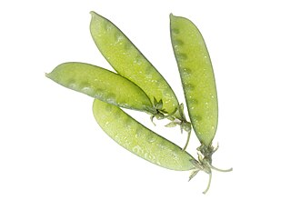

さやえんどうの生産量 都道府県ランキング
全24都道府県の順位と収穫量
さやえんどうの収穫量が全国で最も多いのは鹿児島県で、5,100 tです。全国（1万8,300 t）の28%を占めます。

| 順位 | 都道府県 | 収穫量 | 全国に占める割合 |
|---|---|---|---|
| 1位 | 鹿児島県 | 5,100 t | 28% |
| 2位 | 愛知県 | 1,460 t | 8.0% |
| 3位 | 福島県 | 990 t | 5.4% |
| 4位 | 熊本県 | 938 t | 5.1% |
| 5位 | 和歌山県 | 630 t | 3.4% |
| 6位 | 広島県 | 628 t | 3.4% |
| 7位 | 静岡県 | 525 t | 2.9% |
| 8位 | 茨城県 | 500 t | 2.7% |
| 9位 | 兵庫県 | 449 t | 2.5% |
| 10位 | 秋田県 | 402 t | 2.2% |
| 11位 | 三重県 | 386 t | 2.1% |
| 12位 | 千葉県 | 383 t | 2.1% |
| 13位 | 岩手県 | 372 t | 2.0% |
| 14位 | 大分県 | 326 t | 1.8% |
| 15位 | 北海道 | 319 t | 1.7% |
| 16位 | 長野県 | 275 t | 1.5% |
| 17位 | 福岡県 | 269 t | 1.5% |
| 18位 | 京都府 | 254 t | 1.4% |
| 19位 | 宮城県 | 243 t | 1.3% |
| 20位 | 愛媛県 | 233 t | 1.3% |
| 21位 | 徳島県 | 229 t | 1.3% |
| 22位 | 新潟県 | 228 t | 1.2% |
| 23位 | 青森県 | 210 t | 1.1% |
| 24位 | 岡山県 | 209 t | 1.1% |
PR

さやえんどうの生産量の推移（令和2年産〜令和6年産）
全国の収穫量は、令和2年産の1万9,500 tから令和6年産の1万8,300 tへ、6%減りました。期間中、1位は一貫して鹿児島県です。
| 年 | 全国 | 1位 | 2位 | 3位 |
|---|---|---|---|---|
| 令和6年産 | 1万8,300 t | 鹿児島県5,100 t | 愛知県1,460 t | 福島県990 t |
| 令和5年産 | 1万6,700 t | 鹿児島県3,200 t | 愛知県1,540 t | 熊本県1,040 t |
| 令和4年産 | 1万9,300 t | 鹿児島県4,980 t | 愛知県1,490 t | 福島県1,060 t |
| 令和3年産 | 1万9,800 t | 鹿児島県4,940 t | 愛知県1,380 t | 福島県1,040 t |
| 令和2年産 | 1万9,500 t | 鹿児島県4,450 t | 愛知県1,220 t | 福島県1,100 t |
この数字について
- 分類：マメ科
- 全国の収穫量：1万8,300 t
- この数字が表すもの：収穫量（収穫された重量）
- 調査：作物統計調査 作況調査（野菜） 令和6年産
- 24県分を調査（調査していない県は順位に入りません）
さやえんどうの生産量について、よくある質問
- さやえんどうの生産量が日本一の都道府県はどこですか？
- 鹿児島県です。作物統計調査 作況調査（野菜）（令和6年産）で5,100 tでした。
- さやえんどうの生産量ランキング2位・3位はどこですか？
- 2位は愛知県（1,460 t）、3位は福島県（990 t）です。
- さやえんどうの生産量ランキング4位・5位はどこですか？
- 4位は熊本県（938 t）、5位は和歌山県（630 t）です。さやえんどうの全24県の順位は上の表のとおりです。
- さやえんどうの全国の生産量はどれくらいですか？
- 1万8,300 t（令和6年産）です。
広告